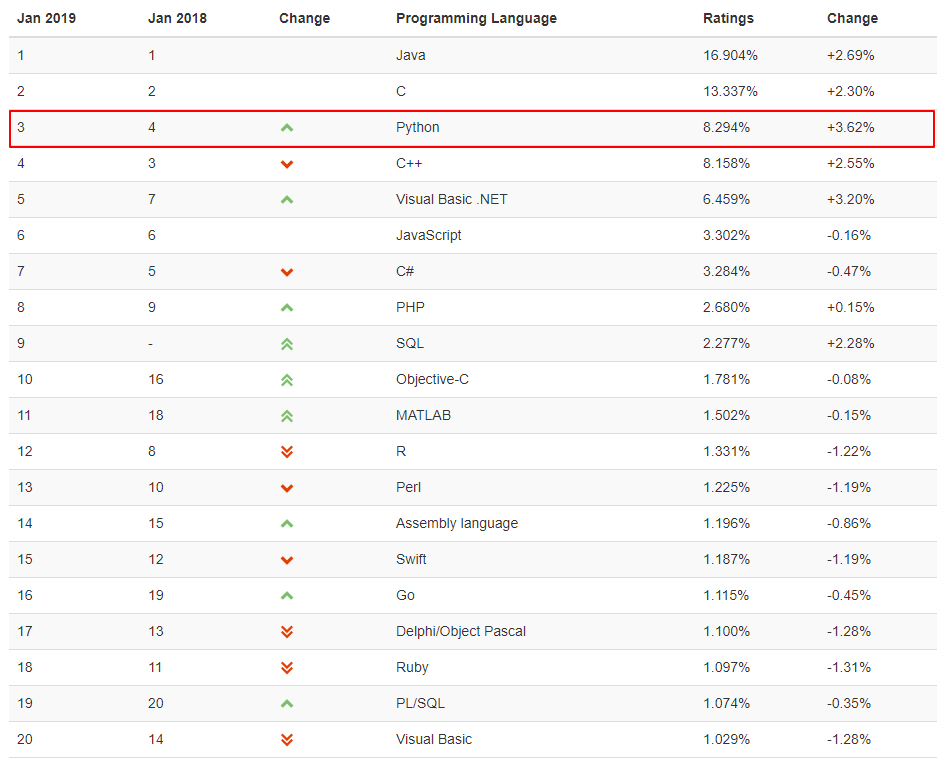
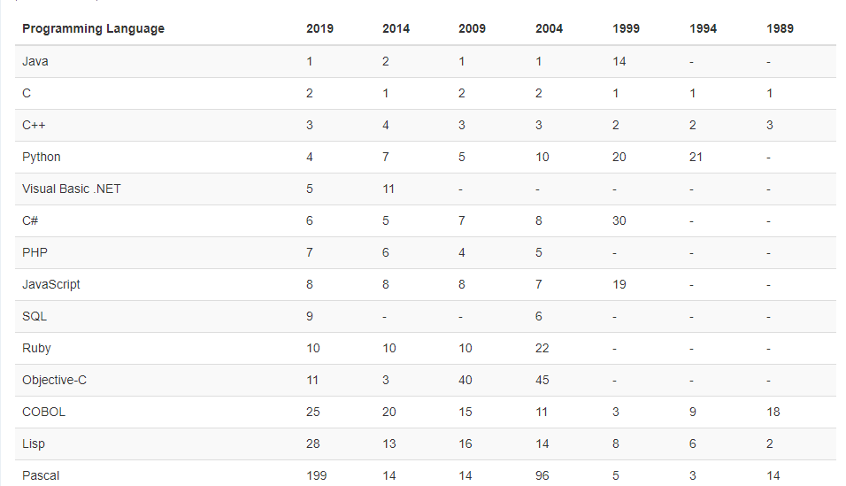
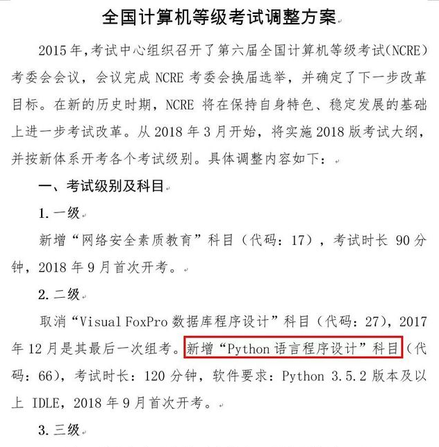
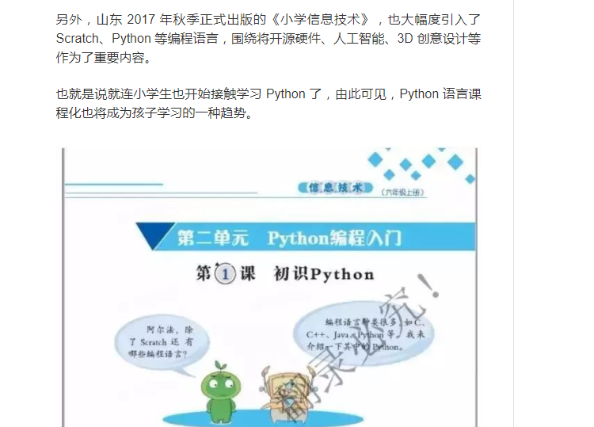

1.1认识Python
1、什么是Python。
相信很多刚接触python的人会这样问。Python是一种面向对象的解释型计算机程序设计语言， 由荷兰人吉多·范罗苏姆于1989年发明，第一个公开发行版发行于1991年。Python语法简洁清晰，特色 之一是强制用空白符作为语句缩进。Python具有丰富且强大的第三方库，被称之为胶水语言。
2、Python的发展历史
Python的创始人为吉多·范罗苏姆1989年的圣诞节期间，吉多·范罗苏姆为了在阿姆斯特丹打发时间，决心开发一个新的脚本解释程序，作为ABC语言的一种继承。之所以选中Python作为程序的名字，是因为他是BBC电视剧——蒙提·派森的飞行马戏团（Monty Python's Flying Circus）的爱好者。
1991年，第一个Python编译器诞生。它是用C语言实现的，并能够调用C语言的库文件。从一出生，Python已经具有了：类，函数，异常处理，包含表和词典在内的核心数据类型，以及模块为基础的拓展系统。
最初的Python完全由Guido本人开发。Python得到Guido同事的欢迎。他们迅速的反馈使用意见，并参与到Python的改进。Guido和一些同事构成Python的核心团队。随后，Python拓展到研究所之外。Python将许多机器层面上的细节隐藏，交给编译器处理，并凸显出逻辑层面的编程思考。
Python程序员可以花更多的时间用于思考程序的逻辑，而不是具体的实现细节，这一特征吸引了广大的程序员。Python开始流行。
Python2.0于2000年10月16日发布，增加了实现完整的垃圾回收，并且支持Unicode。
Python3.0于2008年12月3日发布，此版不完全兼容之前的Python源代码。不过，很多新特性后来也被移植到旧的。
3、人生苦短，我用python，来一张龟叔高清无码图。
4、2019年1月份 编程语言流行排行榜

5、10个编程语言这几年的变动

6、Python可以做什么工作
Web应用开发：
Python开发web后台以开发快，周期短闻名，有三大著名web框架django,flask,Tronado,许多大型网站就是用Python开发的，例如YouTube、Instagram，还有国内的豆瓣。
爬虫开发：
Python用requests，scrapy，xpath 等第三方库开发爬虫,是所有语言中最容易上手，爬虫相关库也是最齐全的。
自动化运维开发：
大多数Linux发行版以及NetBSD、OpenBSD和Mac OS X都集成了Python，可以在终端下直接运行Python。Python编写的系统管理脚本在可读性、性能、代码重用度、扩展性几方面都优于普通的shell脚本。
科学计算：
NumPy,Pandas,SciPy,Matplotlib可以让Python程序员编写科学计算程序。
桌面软件：
PyQt、PySide、wxPython、PyGTK是Python快速开发桌面应用程序的利器。
7、Python的优缺点
优点：
简单，易学：
Python是一种代表简单主义思想的语言。阅读一个良好的Python程序就感觉像是在读英语一样，尽管这个英语的要求非常严格！Python的这种伪代码本质是它最大的优点之一。它使你能够专注于解决问题而不是去搞明白语言本身，语法相对简单。
免费、开源：
Python 开源，开发者可以自由的下载，阅读，甚至是修改python源码。
可以移植:
由于Python是开源的，它已经被移植到了大多数平台下面，例如：Windows、MacOS、Linux、Andorid、iOS等等。
解释性：
大多数计算机编程语言都是编译型的，在运行之前需要将源码编译为操作系统可以执行的二进制格式(0110格式的)，这样大型项目编译过程非常消耗时间，而Python语言写的程序不需要编译成二进制代码。你可以直接从源代码运行程序。在计算机内部，Python解释器把源代码转换成称为字节码的中间形式，然后再把它翻译成计算机使用的机器语言并运行。
面向对象:
Python既支持面向过程，又支持面向对象，这样编程就更加灵活。
丰富的第三方库：
Python具有本身有丰富而且强大的库，而且由于Python的开源特性，第三方库也非常多，例如：在web开发有django,flask,Tornado、爬虫scrapy、科学计算nupy,pandas等等。
缺点：
运行速度慢:
Python是解释型语言，所有它的速度会比，C、C++慢一些，但是不影响使用。由于，现在的硬件配置都非常高，基本上没有影响，除非是一些实时性比较强的程序可能会受到一些影响，但是也有解决办法，可以嵌入C程序。
国内市场较小：
目前来说国内市场相比其他热门语言来说还是比较小，但是很多公司已经开始使用python，发展势头很足，其实并不算缺点。
强制的缩进：
Python有非常严格的缩进语法，只要缩进错误程序立马崩溃。
8、Python在2018年将纳入全国计算机等级考试。

9、山东小学课程加入Python内容
